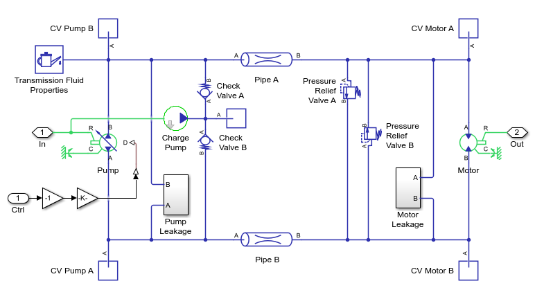
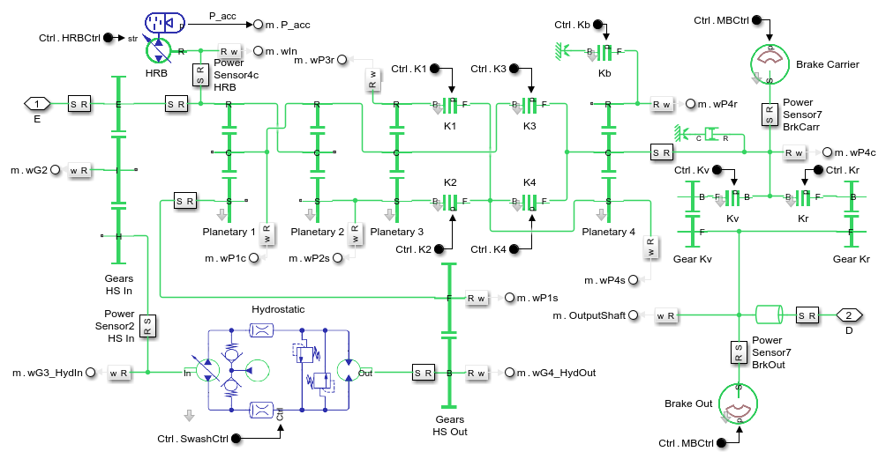
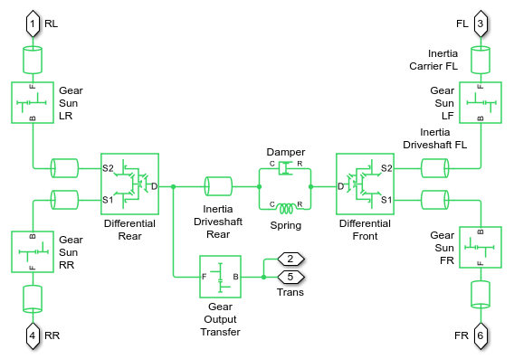
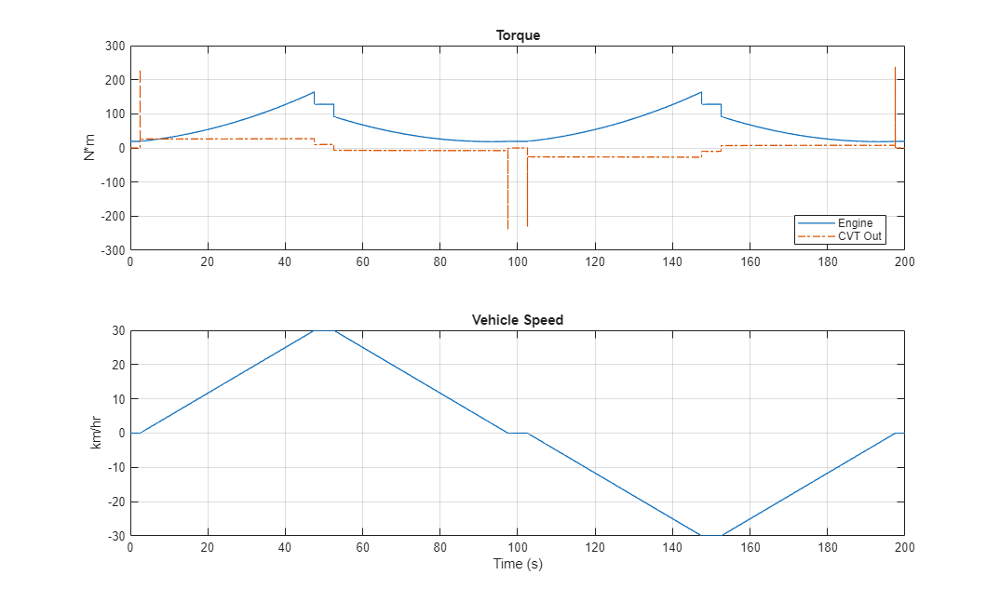
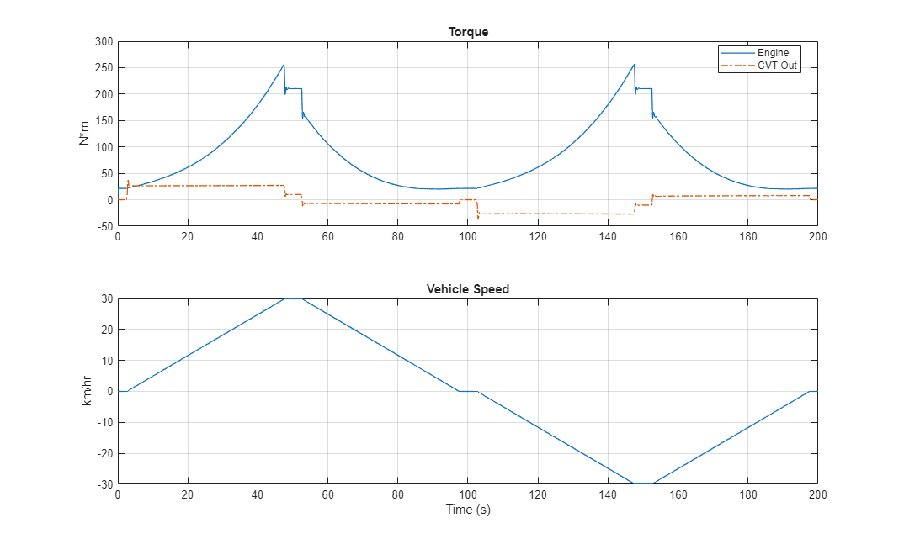
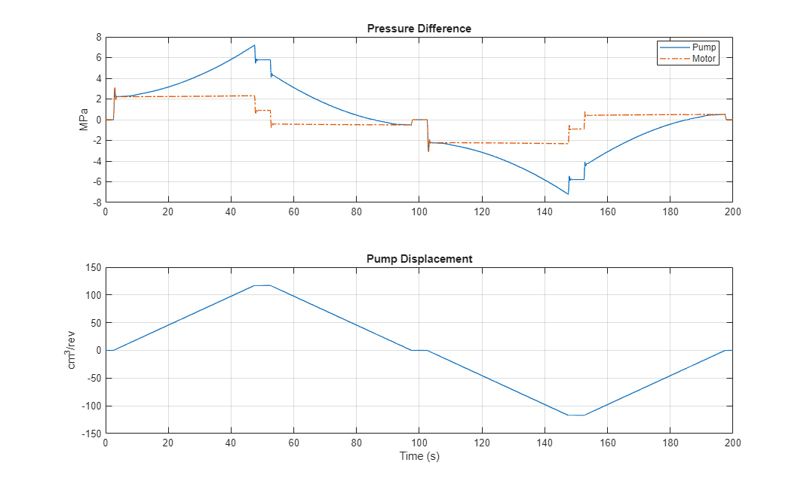
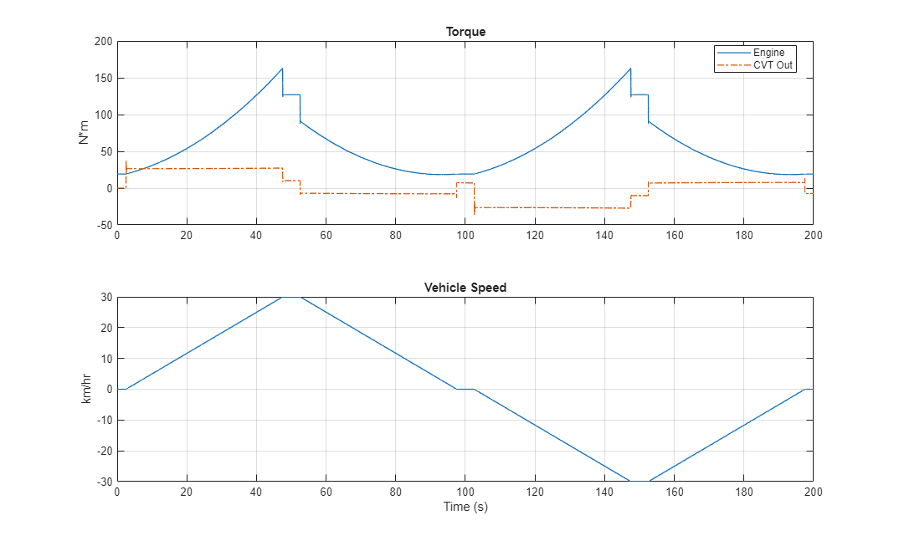
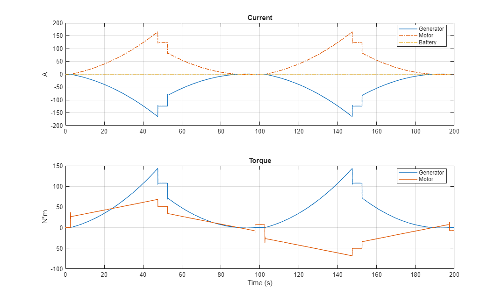
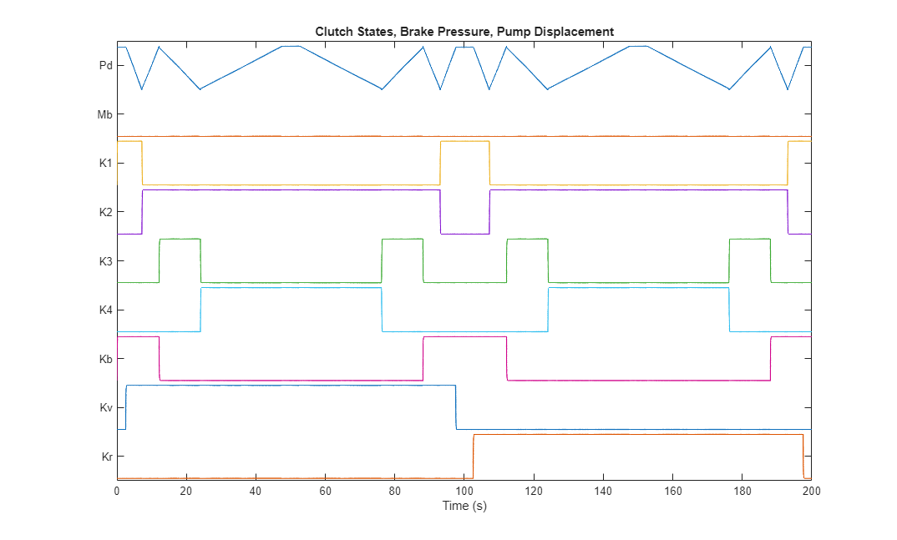
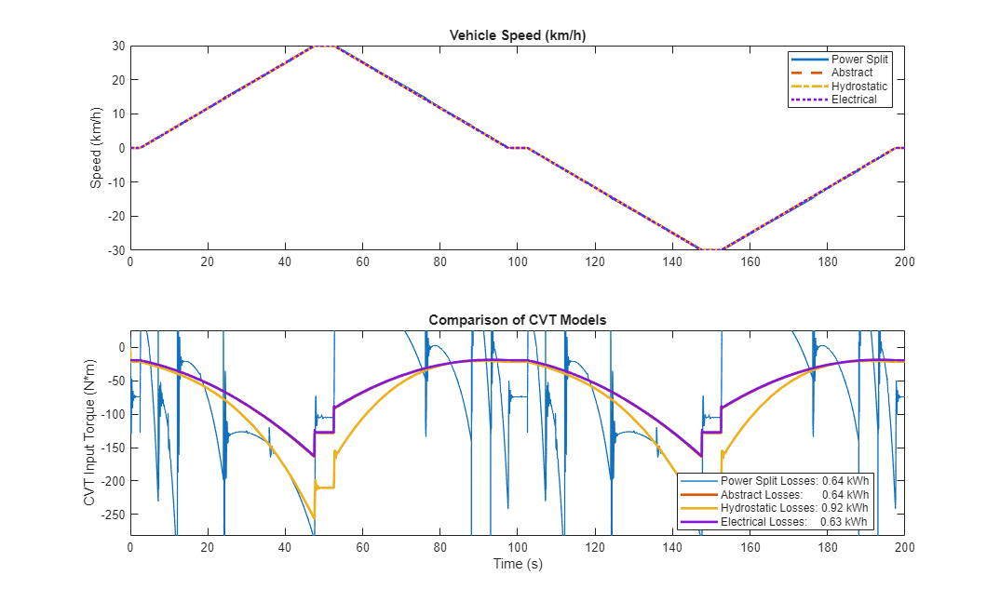

Hydromechanical Power Split CVT
This example models a continuously variable transmission (CVT) using four different methods. An abstract option models the CVT as a variable ratio gear which enables engineers to refine the requirements for the CVT before a technology is chosen. A second option is a pure hydrostatic CVT with a variable displacement pump and a fixed displacement motor. The third option is an electrical CVT, where the engine drives a generator and power is transmitted electrically to a motor which powers the drivetrain. The fourth option is a power-split CVT with parallel hydraulic and mechancial paths.
(return to Wheel Loader Design with Simscape Overview)
Contents
- Model
- Transmission Variant Subsystems
- CVT: Abstract
- CVT: Hydrostatic
- CVT: Electrical
- CVT: Power Split Hydromechanical
- Vehicle Subsystem
- Driveline Subsystem
- Tires and Body Subsystem
- Simulation Results: Accelerate and Decelerate, Abstract CVT
- Simulation Results: Accelerate and Decelerate, Hydrostatic CVT
- Simulation Results: Accelerate and Decelerate, Power Split CVT
- Simulation Results: Accelerate and Decelerate, Power Split CVT
- Comparison of CVT Models
Model
This example provides a simple test harness for a hydromechanical power split transmission. The engine is assumed to run at a perfectly constant speed as the ratio of desired vehicle speed to engine speed is ramped up, cycling the transmission through each speed range. A longitudinal vehicle model with a four-wheel drive powetrain serves as the mechanical load for the transmission.

Transmission Variant Subsystems
Four options for modeling the CVT are included in the model. Using variant subsystems, one of them can be activated for a test. The subsystems all have the same interface, which includes a mechanical connection to the engine and a mechanical connection to the driveline. Intefaces based on physical connections are particularly well-suited to swapping between models of different technologies or fidelity.
CVT: Abstract
Models a CVT as a variable ratio gear. This model can be used in early stages of development to refine requirements for the transmission. It can also be tuned to match a more detailed model of the CVT so as to provide accurate behavior with less computation.
CVT: Hydrostatic
Hydrostatic transmission with variable-displacement pump and fixed-displacement motor. This system alone can also serve as a CVT, but it is not as efficient as the power-split design, as the mechanical path has a higher efficiency.
CVT: Electrical
Electrical transmission with generator, motor, and battery. The input shaft drives a generator which is electrically connected to a motor which mechanically connected to the drivetrain. A control system adjusts the torque request to the generator and motor so that the desired ratio of (input shaft speed/output shaft speed) is achieved.
The power source on the DC bus maintains stability of the DC bus and provides the current required of the motor that the generator cannot provide. This can be due to variations in time constants for the motor and generator or if the generator reaches its power limit.
CVT: Power Split Hydromechanical
Transmission with four planetary gears, clutches, and a parallel power path through a hydrostatic transmission. A hydraulic regenerative braking system is also included to improve fuel economy by storing kinetic energy as pressure in an accumulator.
Vehicle Subsystem
Models driveline and chassis of vehicle. The output of the CVT connects to the output transfer gear of the driveline, and each driveshaft of the driveline connects to the chassis model.
Driveline Subsystem
Models a four-wheel drive driveline. The output of the CVT connects to the output transfer gear which is connected via differentials to all four wheels.
Tires and Body Subsystem
Models the chassis and tires of the vehicle.
Simulation Results: Accelerate and Decelerate, Abstract CVT
Run acceleration and deceleration test with the abstract CVT.
Elapsed Sim Time = 0.5478
Simulation Results: Accelerate and Decelerate, Hydrostatic CVT
Run acceleration and deceleration test with the hydrostatic CVT.
Elapsed Sim Time = 0.83476 
Simulation Results: Accelerate and Decelerate, Power Split CVT
Run acceleration and deceleration test with the electrical CVT.
Elapsed Sim Time = 0.58506 
Simulation Results: Accelerate and Decelerate, Power Split CVT
Run acceleration and deceleration test with the power split CVT.
Elapsed Sim Time = 10.4767
Comparison of CVT Models
The following plot compares the input torque for tests with the power split CVT and the abstract CVT models. The input shaft is spun at a fixed velocity, so we can see that the abstract CVT has been tuned to give similar performance as the power split hydromechanical CVT.
The power split hydromechanical CVT is more efficient than the hydrostatic CVT for this drive cycle. The parallel mechanical path has a higher efficiency, and as a result for this test that goes up to maximum speed and back down again the losses are lower for power split CVT than the pure hydrostatic CVT.
